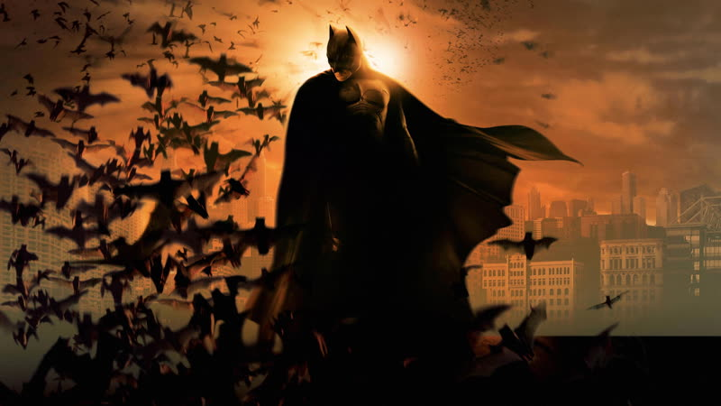
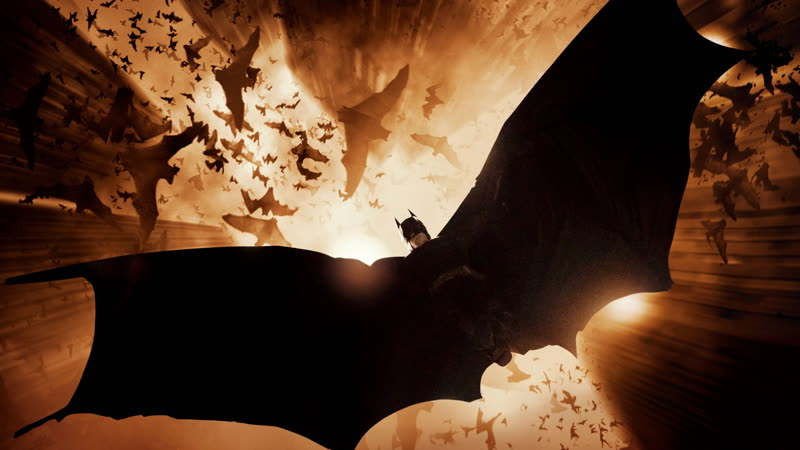
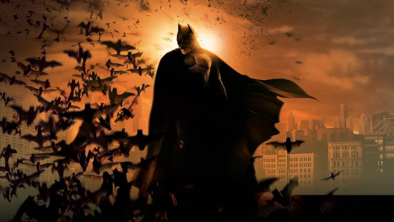
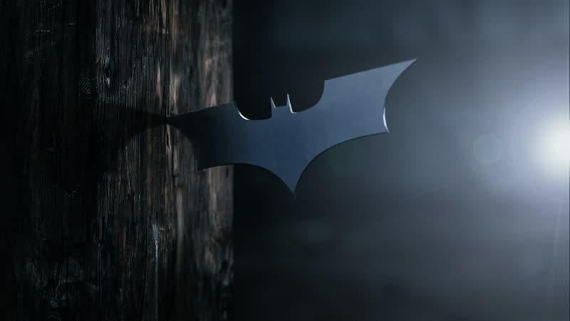
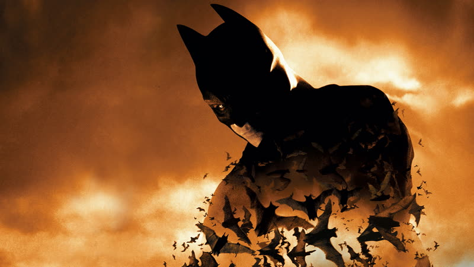

2005
Batman Begins
Bruce Wayne trains abroad, returns to a rotten Gotham and builds the Batman out of his own fear, in a grounded, chronological origin story.
How it plays with time
The film runs mostly in order: Bruce's childhood and his parents' murder, a jump of about fourteen years, then roughly seven years abroad with the League of Shadows, then the Gotham story proper. Wikipedia's plot summary describes jumps rather than a flashback frame. Training-era memories of the childhood trauma and of his father break into the later scenes as short returns, which I have not confirmed from a source. source
Themes
- Fear
- The Scarecrow's toxin is used on Gotham's victims and then on Batman himself, turning what each person dreads into a hallucination. It is the film's clearest picture of fear as a weapon, set against Bruce's own plan to take his fear and make it a tool against criminals. source
- Fathers and children
- Bruce, orphaned young, is shaped by competing father figures: Alfred is the steady carer who keeps him grounded, while Ducard trains him hard and coldly. The film sets these two mentors, and the memory of Thomas Wayne, against each other as pulls on who Bruce becomes. source
- Guilt
- Bruce's childhood fall into the well, and his parents' death after the night at the opera, leave him carrying blame. Later he arrives at the parole hearing for their killer with a gun, still driven by that moment, before he is shown that revenge is not the point.
- Identity
- Back in Gotham, Bruce tells himself he needs a symbol and settles on the bat. In public he plays a careless playboy, so the real person stays hidden behind two constructed faces.
Where it came from
- Nolan said the film was about someone who confronts his deepest fear and then tries to become it. Nolan
confront his innermost fear and then attempt to become it
source - Nolan said he drew mainly on the comics and their mythology, wanted a realistic superhero story that does not wink at the genre, and blended New York, Chicago, Tokyo and Kowloon for Gotham. Nolan source
- Wikipedia reports the opening well scene and the starting idea came from the comic 'The Man Who Falls', with Year One and The Long Halloween also feeding the script; Superman (1978) was named as a model for focus on the hero's growth. Nolan and Goyer (as reported on Wikipedia) source
- Pfister said Nolan admired Superman (1978) for its strong story structure and wanted Batman to appear in a relatively ordinary city, in contrast to Tim Burton's stylised Gotham; the Batmobile chase was meant to feel like The French Connection and Bullitt. Wally Pfister and Nolan source
Stills





Stills © their studios, used here for commentary and criticism.
People who keep coming back
- Wally Pfister, Cinematographer: also memento, insomnia, the prestige, the dark knight, inception, the dark knight rises
- Lee Smith, Editor: also the prestige, the dark knight, inception, the dark knight rises, dunkirk
- Hans Zimmer, Composer: also the dark knight, inception, the dark knight rises, interstellar, dunkirk
- Michael Caine, Alfred Pennyworth: also the prestige, the dark knight, inception, the dark knight rises, interstellar, dunkirk, tenet
- Emma Thomas, Producer: also following, memento, insomnia, the prestige, the dark knight, inception, the dark knight rises, interstellar, dunkirk, tenet, oppenheimer
How it was received
Mostly warm. Critics liked the darker, grounded take and Bale's performance, and several praised how seriously it treated Batman's motives. Complaints centred on Katie Holmes and the thin romance, and on a climax some found weaker than the setup. Roger Ebert gave it four stars. Metacritic 70 source. Rotten Tomatoes 85% source.
Wikipedia frames it as one of the most influential films of the 2000s, credited with popularising the word reboot and the dark origin-story pattern in studio filmmaking. It earned an Oscar nomination for cinematography. The Letterboxd page was fetched but showed no average rating, so no current score is recorded.
Three things most people miss
- Gotham is a composite of real places, and Nolan says the Narrows borrows from Hong Kong's Kowloon Walled City, with New York, Chicago and Tokyo's raised freeways filling out the rest. source
- Pfister coloured the city by real streetlights: orange sodium-vapour in some districts and blue-green mercury-vapour in others, and he and Nolan avoided a digital intermediate to keep the look photochemical. source
- The film plays down Bruce's split between identities compared with earlier Batman films, and Zimmer and Howard's score avoids a conventional heroic theme; the emphasis is on fear and on rival father figures. source
Cast
Christian Bale as Bruce Wayne / Batman; Michael Caine as Alfred Pennyworth; Liam Neeson as Ra's al Ghul; Katie Holmes as Rachel Dawes; Gary Oldman as James Gordon.